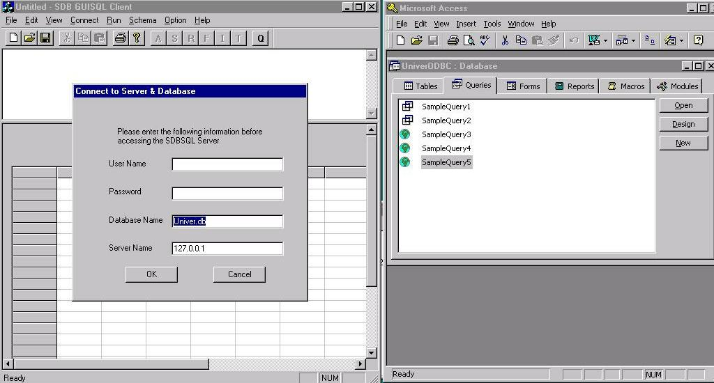

To access the semantic database via our APIs, we first need make a connection to the database and provide a database name and server name, as illustrated in the left window of the following screenshot.
Home
Previous
Next
